Riley is a major character in Inside Out. She is an 11-year-old girl who turns 12 at the end of the film who loves hockey.
Riley was uprooted from her happy and simple life in Minnesota and taken to San Francisco, where she experiences various changes in her life. Her mind is the film's main setting. The story is almost entirely told from the point of view of her five Emotions: Fear, Sadness, Joy, Disgust, and Anger.
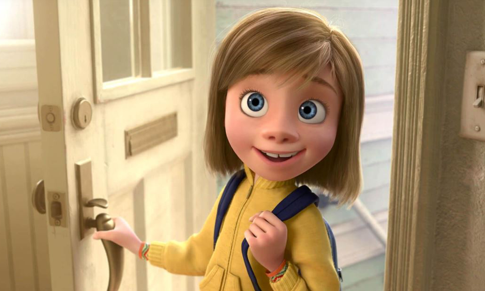
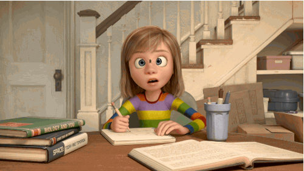
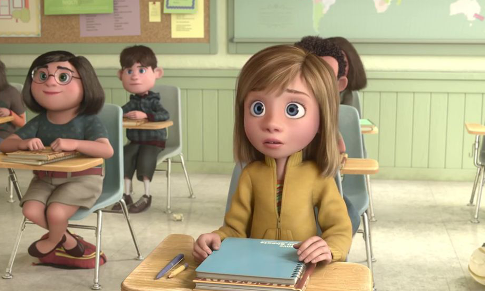
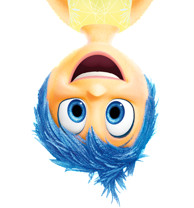
Joy
Joy is the main character of Inside Out. She is the yellow Emotion and the main Emotion out of the five that live inside the mind of Riley Andersen. She appears to be happy all the time and full of energy.
"Joy is the engine. She keeps everyone moving and happy. She represents the parts of Riley that are starting to change and become more complicated, and she is reluctant to let that change happen. She may be the most positive, but in many ways, she is the least flexible."
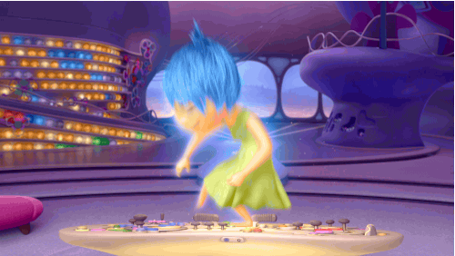
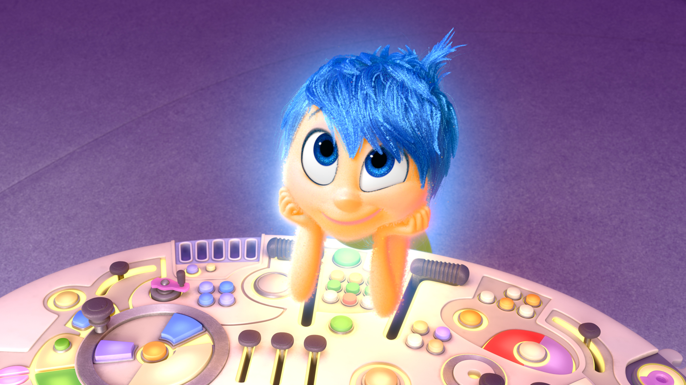
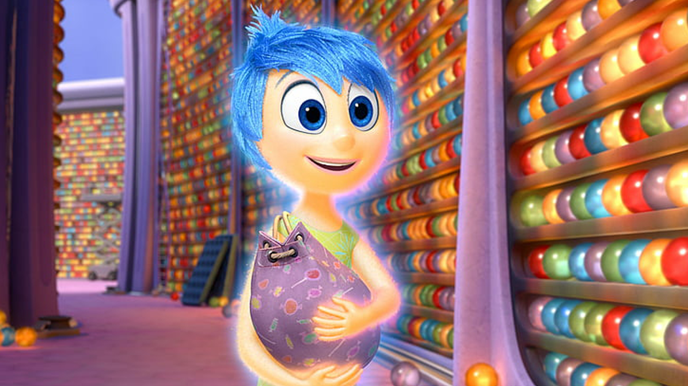
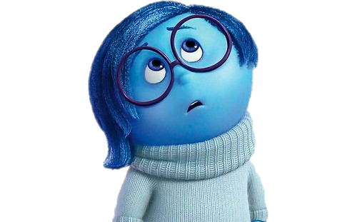
Sadness
Sadness is a character in Inside Out. She is the blue Emotion and one of the five Emotions inside the mind of Riley.
"Sadness and Joy are polar opposites. While Joy is outgoing and ferociously optimistic, Sadness is slow and more prone to lie on the ground. she is usually pessimistic and consistently sees the negative side of things."
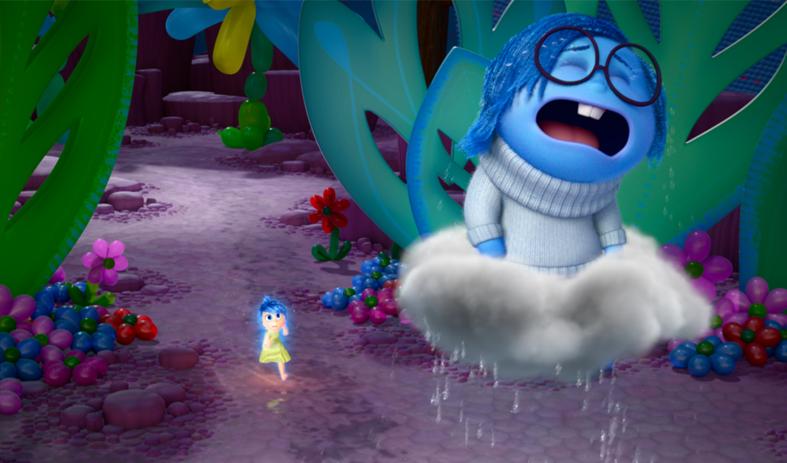
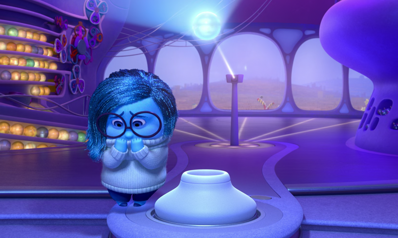
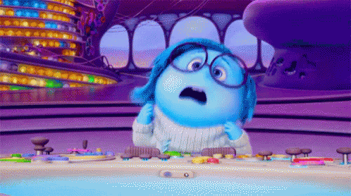
Other Character
Anger
Anger feels very passionately about making sure things are fair for Riley. He has a fiery spirit and tends to explode (literally) when things don’t go as planned. He is quick to overreact and has little patience for life’s imperfections.
Disgust
Disgust is very stubborn, honest, easily upset and disgusted, and annoyed, as well as sarcastic, tomboyish, superficial, cynical, vain, and impatient. She sometimes gets her way and is obsessed with indifference. She also seizes the moment and keeps careful about people, places, and things that come into contact with Riley's eye.
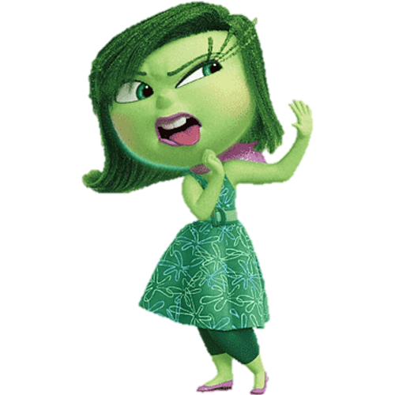
Fear
Fear’s main job is to protect Riley and keep her safe. He is constantly on the lookout for potential disasters, and spends time evaluating the possible dangers, pitfalls and risk involved in Riley’s everyday activities. There are very few activities and events that Fear does not find to be dangerous and possibly fatal.
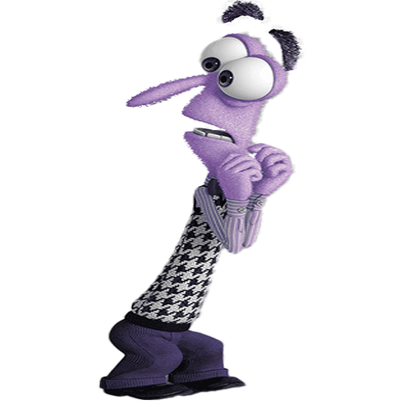
Bing Bong
With the trunk of an elephant, the tail of a cat, and body of cotton candy, Bing Bong is Riley’s imaginary friend. (You have to remember, when Riley was three animals were all the rage.) Unfortunately, he’s been out of work since Riley turned four, and he’s desperate to not be left behind as Riley grows up.